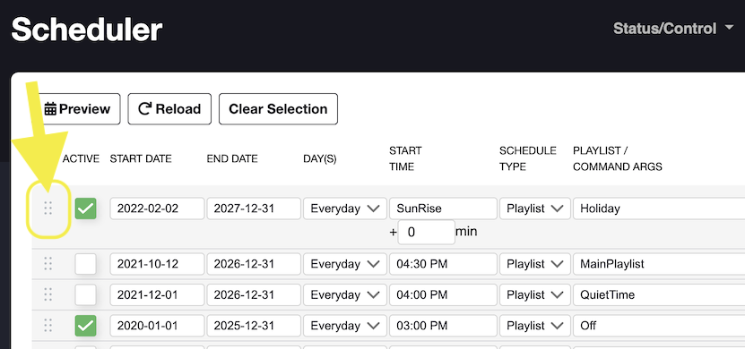

FPP determines the Playlist to run based on Priority ordering. The priority of the playlists is determined by the order they appear on the Scheduler page in FPP. The higher the playlist appears in the list, the higher the priority. If two playlists have overlapping scheduled times, the playlist higher in the list has higher priority and will run during the overlapping time.
Adjusting the priority is done via Drag/Drop. And item in the list can be re-ordered by dragging the row up/down by selecting the "Drag Handle" (see screen shot) to drag the row. 